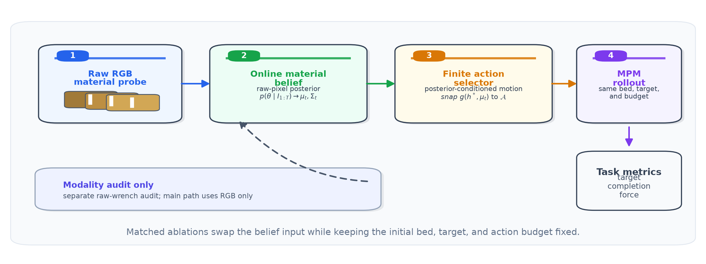
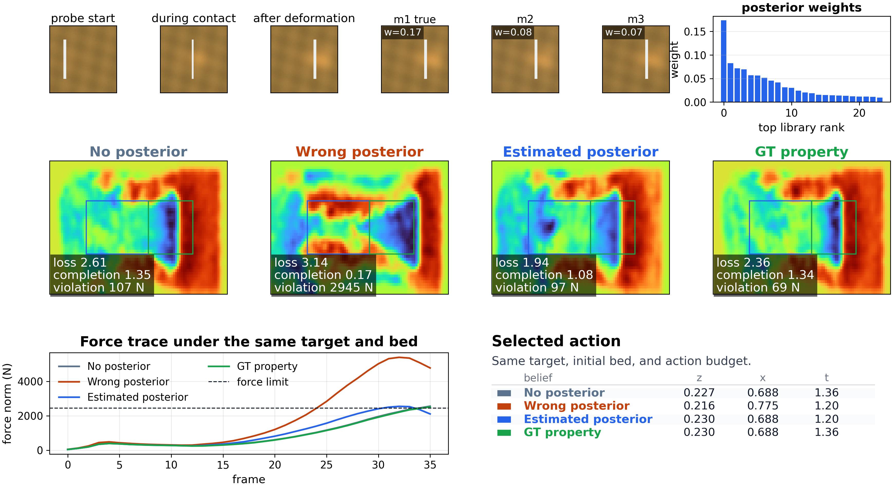
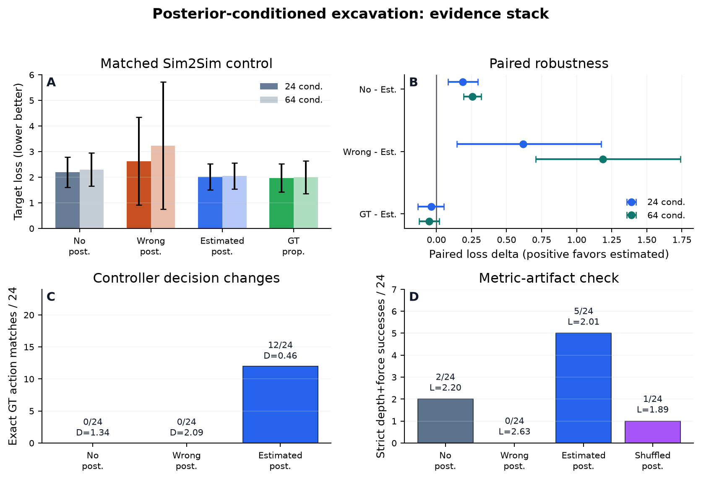
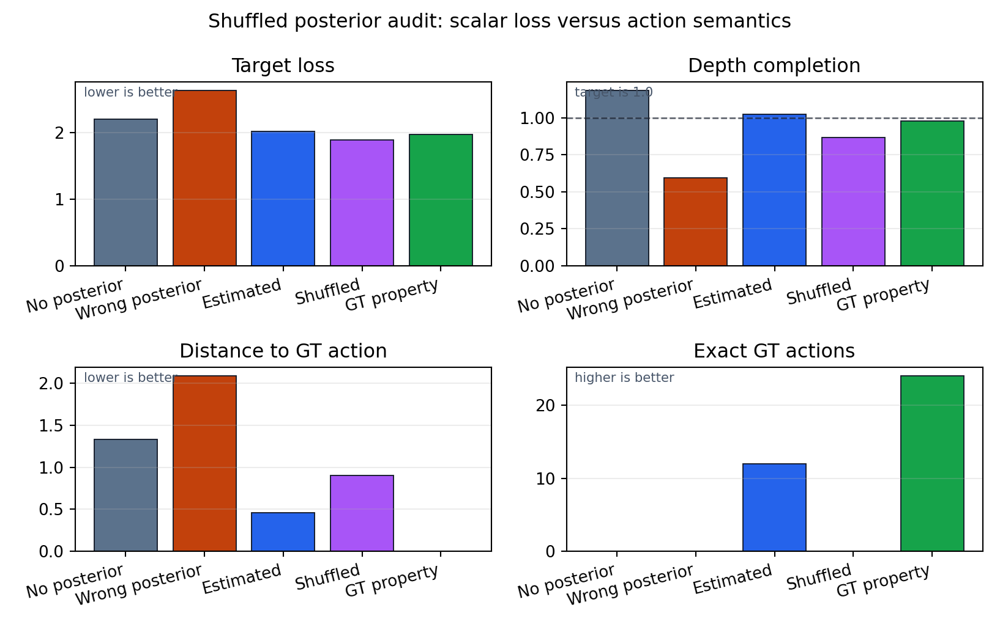
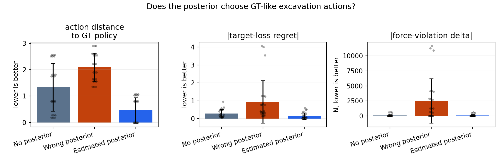
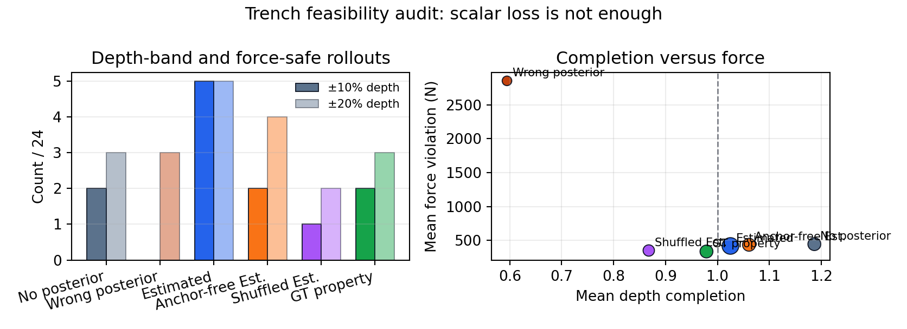
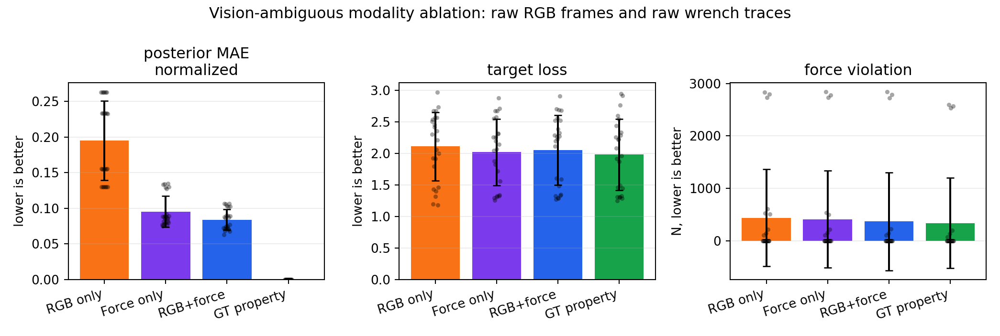

How to read the heat map: it is the same granular interaction shown from above as surface height, so the colors encode where material was removed or accumulated.
Technical Summary
Robotic excavation in granular media depends on material properties that are not directly
visible from the initial surface. We study whether a short raw RGB material-probe sequence
can be converted into an online material belief that improves subsequent excavation
decisions. The controller uses the posterior mean to select from a finite MPM digging
action budget. Across matched MPM conditions, estimated posterior control improves target
loss over no posterior and wrong posterior, while remaining close to a GT-property
finite-action reference. The current claim is intentionally bounded: this is controlled
Sim2Sim evidence, not real-camera closed-loop robot excavation. A formal paper draft is
under preparation; this page is a project summary and demo page for the current study.
Results Highlights
Posterior-Conditioned Excavation
Same bed, target, and action budget; only the controller belief changes.
Force-Dominant Stress Test
A DDBot-core-style target height-field task used only as a scoped supporting check.
Raw-RGB Posterior Control Pipeline

The main ablation uses raw RGB frames from a short material-probe interaction to update an
online material posterior, then uses its mean to choose a finite-budget excavation motion.
No-posterior, wrong-posterior, estimated-posterior, and GT-property beliefs are compared
with the same initial bed, target, and action budget.
Task 1: Matched MPM Excavation
A representative rollout under four belief inputs.

The evidence figure links posterior evidence, action choice, final height map, and force trace.
Belief input
Target loss
Completion
Force violation
Strict success
GT action
No posterior
2.198
1.19
446 N
2/24
0/24
Wrong posterior
2.629
0.59
2852 N
0/24
0/24
Estimated posterior
2.010
1.03
420 N
5/24
12/24
GT property reference
1.972
0.98
338 N
2/24
24/24
Task 2: Evidence Stack and Failure Modes

Target loss, paired robustness, action changes, and metric-artifact audit.

Negative control: scalar loss can improve through conservative under-digging.

Action-level audit: estimated posterior moves closer to the GT finite action.

Strict depth and force feasibility audit prevents hiding behind one scalar score.
Task 3: Supporting Checks
DDBot-core-style target height-field benchmark with force posterior replanning.
A scoped stress test, not full official DDBot superiority.

When vision is ambiguous, raw wrench evidence improves the material posterior.